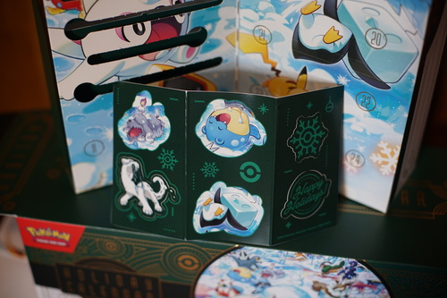
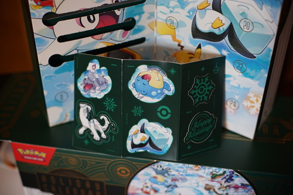

A few moons ago, my uncle bought me a kit for making flower fairy dolls. I made a bunch, then moved on to making cyclops aliens of my own design.
I made felt dolls for a while around 2010. I was obsessed with men's figure skating at the Vancouver olympics. Here you can see Evgeni Plushenko, Evan Lysacek, and Johnny Weir. Also seen are Uboa and an alien of my own design. There's a doll for my Alice Margatroid cosplay that was never brought to a convention which was made in maybe 2014. She has a very flimsy neck and just flops over.
Not pictured: my magnum opus, Skrillex
 

Sticker sheet with a very cute Spheal! What should I stick him on??